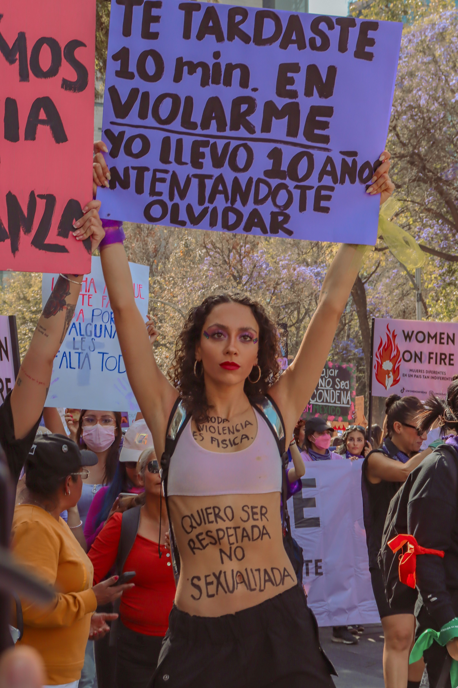
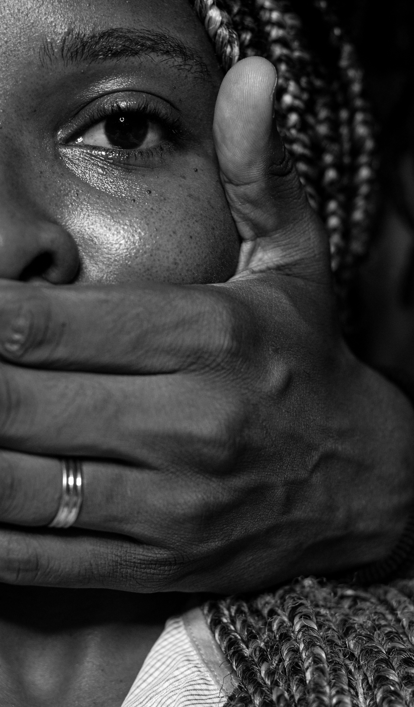
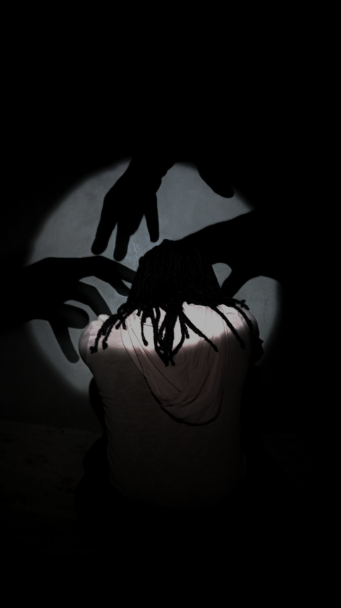
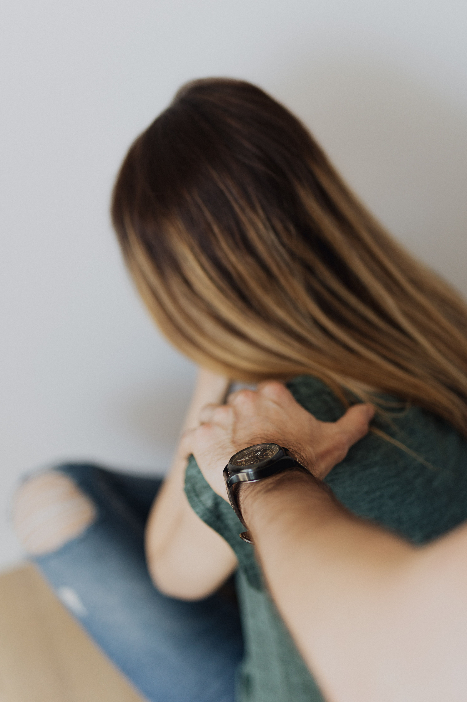
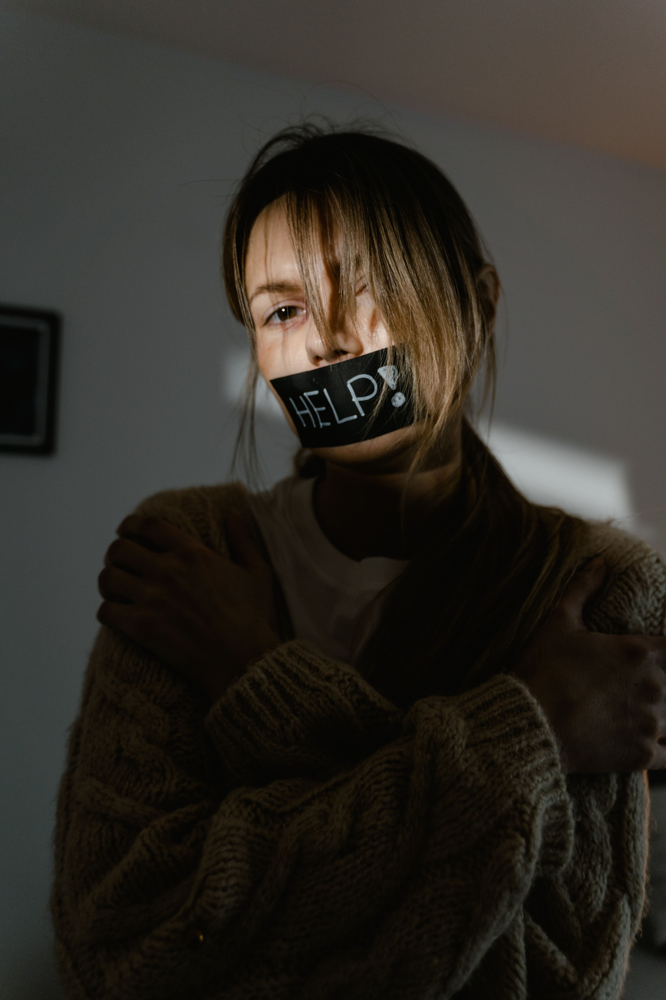
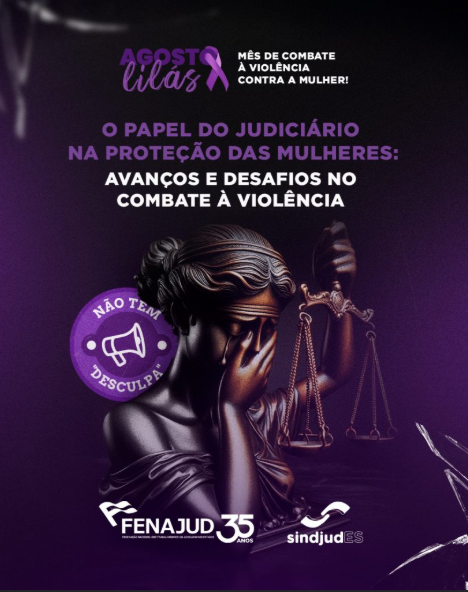
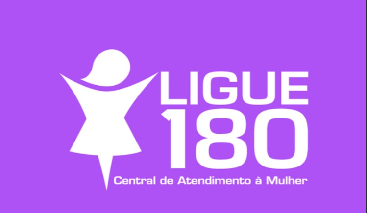

A violência doméstica é qualquer ação ou comportamento que cause sofrimento físico, psicológico, sexual, moral ou patrimonial dentro de uma relação familiar ou afetiva. Ela pode acontecer com pessoas de diferentes idades e condições sociais. Muitas vezes, começa com ameaças, humilhações, ciúmes excessivos, controle e isolamento, podendo evoluir para agressões mais graves. Além dos danos físicos, pode causar medo, tristeza, ansiedade e baixa autoestima. Por isso, é importante combater a violência e incentivar as vítimas a buscar ajuda e proteção.

A violência física acontece quando uma pessoa utiliza força para machucar ou ferir outra. Ela pode incluir agressões, empurrões, socos, chutes e outros atos que causem dor ou lesões. Esse tipo de violência pode trazer consequências graves para a vítima, tanto físicas quanto emocionais.

A violência psicológica acontece quando uma pessoa causa sofrimento emocional, medo ou baixa autoestima em outra. Humilhações, ameaças, insultos, controle excessivo, ciúmes e isolamento são alguns exemplos desse tipo de violência. Ela pode afetar a confiança, o bem-estar e a saúde emocional da vítima.

A violência sexual acontece quando uma pessoa é forçada ou pressionada a realizar algum ato sexual sem o seu consentimento. Ela pode envolver ameaças, toques indesejados, abuso ou qualquer situação em que a vontade da vítima não seja respeitada. Esse tipo de violência pode causar consequências físicas e emocionais graves.

A violência patrimonial acontece quando uma pessoa controla, destrói, esconde ou retira bens, documentos, dinheiro ou outros recursos de outra pessoa. Esse tipo de violência busca limitar a independência da vítima e pode dificultar sua capacidade de se proteger ou sair de uma situação de abuso.

A violência moral acontece quando uma pessoa sofre atitudes que prejudicam sua honra, reputação ou dignidade. Calúnias, insultos, acusações falsas, humilhações e difamações são alguns exemplos. Esse tipo de violência pode causar sofrimento emocional e afetar a autoestima da vítima.
A Lei Maria da Penha foi criada para proteger as mulheres contra a violência doméstica e familiar. Ela estabelece medidas de proteção para as vítimas e busca combater diferentes formas de violência, como a física, psicológica, sexual, patrimonial e moral. A lei recebeu esse nome em homenagem a Maria da Penha Maia Fernandes, que sofreu violência doméstica e se tornou símbolo da luta pelos direitos das mulheres. Conhecer a Lei Maria da Penha é importante para reconhecer situações de violência e saber que existem formas de buscar proteção e ajuda.
Saiba mais no Instituto Maria da PenhaO Agosto Lilás é uma campanha de conscientização e enfrentamento à violência contra a mulher. Durante esse período, são realizadas ações para informar a sociedade sobre os diferentes tipos de violência, incentivar a denúncia e divulgar os serviços de apoio e proteção às mulheres.
A campanha também busca fortalecer a importância da Lei Maria da Penha e promover uma sociedade mais segura, respeitosa e livre de violência. A informação é uma das principais ferramentas para reconhecer situações de abuso e ajudar quem precisa.
💜 Violência contra a mulher não é normal. Denunciar, buscar ajuda e apoiar as vítimas são atitudes importantes para combater esse problema.

Alguns comportamentos podem indicar uma situação de violência ou relacionamento abusivo. Entre eles estão:
A informação é uma importante ferramenta para combater a violência doméstica. É fundamental respeitar os limites e os direitos de todas as pessoas e buscar ajuda quando uma situação de violência acontece.
No Brasil, em uma situação de emergência, pode-se acionar a Polícia Militar pelo número 190. Também existe o Ligue 180, serviço de atendimento e orientação relacionado à violência contra a mulher.
